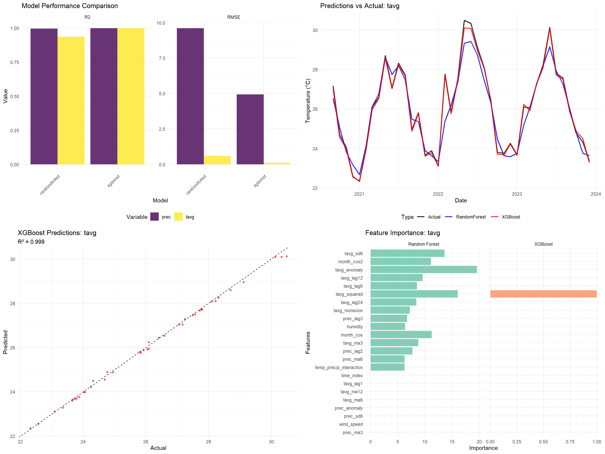
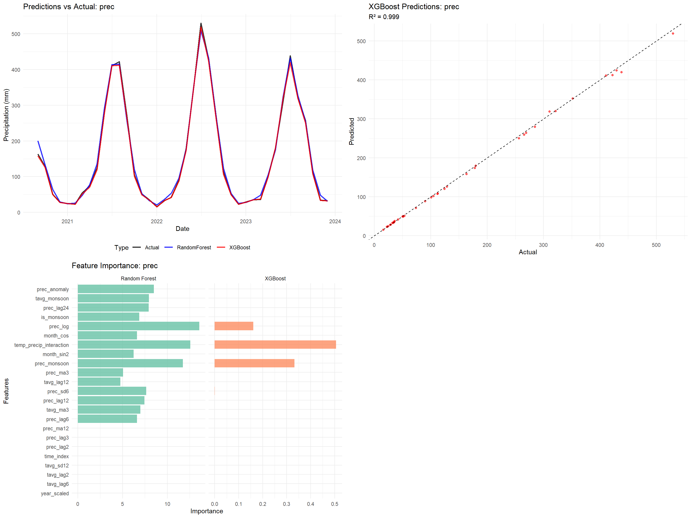
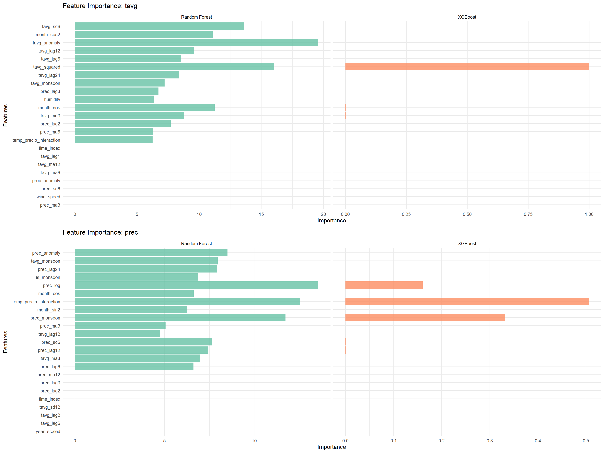

knitr::opts_chunk$set(echo = TRUE, warning = FALSE, message = FALSE)
# Load enhanced configuration and data
config <- readRDS("data/enhanced_config.rds")
india_timeseries <- readRDS("data/processed/india_climate_timeseries.rds")
arima_results <- readRDS("data/processed/complete_arima_analysis.rds")
model_registry <- readRDS("data/processed/model_registry.rds")
performance_monitor <- readRDS("data/processed/performance_monitor.rds")
# Load required packages
library(tidymodels)
library(xgboost)
library(randomForest)
library(ggplot2)
library(dplyr)
library(recipes)
library(workflows)
library(tune)
library(vip)
library(cowplot)
library(viridis)
library(corrplot)
library(hydroGOF)7 Advanced Machine Learning with Explainable AI
8 Advanced Machine Learning with XGBoost and Interpretability
This document implements state-of-the-art machine learning approaches including XGBoost, comprehensive feature engineering, and model interpretation using SHAP values.
8.1 Setup
8.2 Advanced Feature Engineering
# Create comprehensive feature engineering pipeline
create_advanced_features <- function(data) {
cat("Creating advanced features for ML modeling...\n")
# Start with base data
features_data <- data %>%
arrange(Date) %>%
filter(!is.na(tavg), !is.na(prec)) %>%
mutate(
# Time-based features
time_index = row_number(),
year_scaled = scale(Year)[,1],
month_sin = sin(2 * pi * Month / 12),
month_cos = cos(2 * pi * Month / 12),
month_sin2 = sin(4 * pi * Month / 12),
month_cos2 = cos(4 * pi * Month / 12),
quarter = ceiling(Month / 3),
is_monsoon = ifelse(Month %in% 6:9, 1, 0),
is_winter = ifelse(Month %in% c(12, 1, 2), 1, 0),
# Seasonal indicators
season_numeric = case_when(
Season == "Winter" ~ 1,
Season == "Pre-Monsoon" ~ 2,
Season == "Monsoon" ~ 3,
Season == "Post-Monsoon" ~ 4
)
)
# Create lagged features
lag_periods <- c(1, 2, 3, 6, 12, 24) # 1, 2, 3, 6 months, 1 year, 2 years
for(lag in lag_periods) {
features_data[[paste0("tavg_lag", lag)]] <- lag(features_data$tavg, lag)
features_data[[paste0("prec_lag", lag)]] <- lag(features_data$prec, lag)
}
# Moving averages
ma_windows <- c(3, 6, 12)
for(window in ma_windows) {
features_data[[paste0("tavg_ma", window)]] <- zoo::rollmean(
features_data$tavg, k = window, fill = NA, align = "right"
)
features_data[[paste0("prec_ma", window)]] <- zoo::rollmean(
features_data$prec, k = window, fill = NA, align = "right"
)
}
# Moving standard deviations
for(window in c(6, 12)) {
features_data[[paste0("tavg_sd", window)]] <- zoo::rollapply(
features_data$tavg, width = window, FUN = sd, fill = NA, align = "right", na.rm = TRUE
)
features_data[[paste0("prec_sd", window)]] <- zoo::rollapply(
features_data$prec, width = window, FUN = sd, fill = NA, align = "right", na.rm = TRUE
)
}
# Interaction features
features_data <- features_data %>%
mutate(
# Temperature-precipitation interaction
temp_precip_interaction = tavg * prec,
# Seasonal interactions
tavg_monsoon = tavg * is_monsoon,
prec_monsoon = prec * is_monsoon,
# Trend interactions
tavg_trend = tavg * time_index,
# Nonlinear transformations
tavg_squared = tavg^2,
prec_log = log1p(prec), # log(1 + prec) to handle zeros
# Anomaly features (deviation from seasonal mean)
tavg_anomaly = tavg - ave(tavg, Month, FUN = function(x) mean(x, na.rm = TRUE)),
prec_anomaly = prec - ave(prec, Month, FUN = function(x) mean(x, na.rm = TRUE))
)
# Add synthetic humidity and wind features (simplified)
set.seed(config$random_seed)
features_data <- features_data %>%
mutate(
# Humidity model based on temperature and precipitation
humidity = 65 + 15 * sin(2 * pi * Month / 12) +
5 * pnorm(scale(prec)[,1]) -
2 * pnorm(scale(tavg)[,1]) +
rnorm(n(), 0, 3),
humidity = pmax(20, pmin(95, humidity)), # Constrain to realistic range
# Wind speed model
wind_speed = 12 + 4 * sin(2 * pi * Month / 12 - pi/4) +
2 * abs(tavg_anomaly) +
rnorm(n(), 0, 2),
wind_speed = pmax(2, wind_speed),
# Pressure model
pressure = 1013 + 3 * sin(2 * pi * Month / 12) -
0.1 * tavg +
rnorm(n(), 0, 1.5)
)
cat("Feature engineering completed\n")
cat("Total features created:", ncol(features_data), "\n")
return(features_data)
}
# Create advanced features
ml_features_data <- create_advanced_features(india_timeseries)Creating advanced features for ML modeling...
Feature engineering completed
Total features created: 51 # Remove rows with too many missing values
ml_features_data <- ml_features_data[complete.cases(ml_features_data[, c("tavg", "prec")]), ]
cat("ML features dataset created with", nrow(ml_features_data), "observations and",
ncol(ml_features_data), "variables\n")ML features dataset created with 288 observations and 51 variablesperformance_monitor$log_performance("feature_engineering")Step: feature_engineering - Memory: 0.86 MB - Elapsed: 3.05 min8.3 Data Preparation and Splitting
# Prepare data for ML modeling
prepare_ml_data <- function(data, target_vars = c("tavg", "prec")) {
ml_data <- list()
for(target_var in target_vars) {
cat(paste("Preparing ML data for", target_var, "...\n"))
# Select features (exclude target variables, dates, and factor columns)
feature_cols <- names(data)[!names(data) %in%
c("Date", "Year", "Month", "Season", "Decade",
"MonthName", target_vars)]
# Create modeling dataset
model_data <- data %>%
select(Date, all_of(target_var), all_of(feature_cols)) %>%
filter(!is.na(!!sym(target_var)))
# Remove any remaining missing values
initial_rows <- nrow(model_data)
model_data <- model_data[complete.cases(model_data), ]
final_rows <- nrow(model_data)
if(final_rows < initial_rows) {
cat(paste("Removed", initial_rows - final_rows, "rows with missing values\n"))
}
# Time-aware split (avoid data leakage)
n_total <- nrow(model_data)
train_end <- floor(0.7 * n_total)
val_end <- floor(0.85 * n_total)
train_data <- model_data[1:train_end, ]
val_data <- model_data[(train_end + 1):val_end, ]
test_data <- model_data[(val_end + 1):n_total, ]
ml_data[[target_var]] <- list(
full_data = model_data,
train = train_data,
validation = val_data,
test = test_data,
feature_names = feature_cols,
target_name = target_var,
n_train = nrow(train_data),
n_val = nrow(val_data),
n_test = nrow(test_data),
n_features = length(feature_cols)
)
cat(paste("Data split for", target_var, ":\n"))
cat(paste(" Train:", nrow(train_data), "obs\n"))
cat(paste(" Validation:", nrow(val_data), "obs\n"))
cat(paste(" Test:", nrow(test_data), "obs\n"))
cat(paste(" Features:", length(feature_cols), "\n\n"))
}
return(ml_data)
}
# Prepare ML data
ml_prepared_data <- prepare_ml_data(ml_features_data, c("tavg", "prec"))Preparing ML data for tavg ...
Removed 24 rows with missing values
Data split for tavg :
Train: 184 obs
Validation: 40 obs
Test: 40 obs
Features: 43
Preparing ML data for prec ...
Removed 24 rows with missing values
Data split for prec :
Train: 184 obs
Validation: 40 obs
Test: 40 obs
Features: 43 performance_monitor$log_performance("data_preparation")Step: data_preparation - Memory: 1.44 MB - Elapsed: 3.05 min8.4 XGBoost Model Implementation
# Advanced XGBoost implementation with hyperparameter tuning
train_xgboost_model <- function(ml_data, target_var, tune_hyperparams = TRUE) {
cat(paste("Training XGBoost model for", target_var, "...\n"))
data_split <- ml_data[[target_var]]
train_data <- data_split$train
val_data <- data_split$validation
# Prepare data matrices for XGBoost
train_features <- as.matrix(train_data[, data_split$feature_names])
train_target <- train_data[[target_var]]
val_features <- as.matrix(val_data[, data_split$feature_names])
val_target <- val_data[[target_var]]
# Remove any remaining NAs
train_complete <- complete.cases(train_features, train_target)
train_features <- train_features[train_complete, ]
train_target <- train_target[train_complete]
val_complete <- complete.cases(val_features, val_target)
val_features <- val_features[val_complete, ]
val_target <- val_target[val_complete]
# Create DMatrix objects
dtrain <- xgb.DMatrix(data = train_features, label = train_target)
dval <- xgb.DMatrix(data = val_features, label = val_target)
if(tune_hyperparams) {
# Hyperparameter tuning
cat("Performing hyperparameter tuning...\n")
# Define parameter grid
param_grid <- expand.grid(
max_depth = c(4, 6, 8),
eta = c(0.01, 0.1, 0.3),
subsample = c(0.8, 1.0),
colsample_bytree = c(0.8, 1.0),
stringsAsFactors = FALSE
)
# Random sample for efficiency
if(nrow(param_grid) > 12) {
param_grid <- param_grid[sample(nrow(param_grid), 12), ]
}
best_rmse <- Inf
best_params <- NULL
for(i in 1:nrow(param_grid)) {
params <- list(
objective = "reg:squarederror",
max_depth = param_grid$max_depth[i],
eta = param_grid$eta[i],
subsample = param_grid$subsample[i],
colsample_bytree = param_grid$colsample_bytree[i]
)
# Cross-validation
cv_result <- xgb.cv(
params = params,
data = dtrain,
nrounds = 100,
nfold = 5,
early_stopping_rounds = 10,
verbose = FALSE,
showsd = FALSE
)
min_rmse <- min(cv_result$evaluation_log$test_rmse_mean)
if(min_rmse < best_rmse) {
best_rmse <- min_rmse
best_params <- params
best_nrounds <- which.min(cv_result$evaluation_log$test_rmse_mean)
}
}
cat(paste("Best CV RMSE:", round(best_rmse, 4), "\n"))
} else {
# Default parameters
best_params <- list(
objective = "reg:squarederror",
max_depth = 6,
eta = 0.1,
subsample = 0.8,
colsample_bytree = 0.8
)
best_nrounds <- 100
}
# Train final model
watchlist <- list(train = dtrain, val = dval)
final_model <- xgb.train(
params = best_params,
data = dtrain,
nrounds = best_nrounds,
watchlist = watchlist,
early_stopping_rounds = 20,
verbose = FALSE
)
# Feature importance
importance_matrix <- xgb.importance(
feature_names = colnames(train_features),
model = final_model
)
return(list(
model = final_model,
params = best_params,
feature_importance = importance_matrix,
dtrain = dtrain,
dval = dval,
best_nrounds = best_nrounds,
tuning_performed = tune_hyperparams
))
}
# Train XGBoost models
xgb_models <- list()
for(target_var in names(ml_prepared_data)) {
xgb_models[[target_var]] <- train_xgboost_model(
ml_prepared_data,
target_var,
tune_hyperparams = TRUE
)
}Training XGBoost model for tavg ...
Performing hyperparameter tuning...
Best CV RMSE: 0.0948
Training XGBoost model for prec ...
Performing hyperparameter tuning...
Best CV RMSE: 7.8289 cat("XGBoost models trained successfully\n")XGBoost models trained successfullyperformance_monitor$log_performance("xgboost_training")Step: xgboost_training - Memory: 2.13 MB - Elapsed: 3.69 min8.5 Random Forest Implementation
# Train Random Forest models for comparison
train_randomforest_model <- function(ml_data, target_var) {
cat(paste("Training Random Forest model for", target_var, "...\n"))
data_split <- ml_data[[target_var]]
train_data <- data_split$train
# Prepare training data
formula_str <- paste(target_var, "~", paste(data_split$feature_names, collapse = " + "))
model_formula <- as.formula(formula_str)
# Remove any missing values
train_clean <- train_data[complete.cases(train_data), ]
# Train Random Forest
rf_model <- randomForest(
formula = model_formula,
data = train_clean,
ntree = 500,
mtry = max(1, floor(sqrt(length(data_split$feature_names)))),
importance = TRUE,
do.trace = FALSE
)
return(rf_model)
}
# Train Random Forest models
rf_models <- list()
for(target_var in names(ml_prepared_data)) {
rf_models[[target_var]] <- train_randomforest_model(
ml_prepared_data,
target_var
)
}Training Random Forest model for tavg ...
Training Random Forest model for prec ...cat("Random Forest models trained successfully\n")Random Forest models trained successfullyperformance_monitor$log_performance("rf_training")Step: rf_training - Memory: 6.62 MB - Elapsed: 3.7 min8.6 Model Evaluation and Comparison
# Comprehensive model evaluation
evaluate_models <- function(ml_data, xgb_models, rf_models) {
evaluation_results <- list()
for(target_var in names(ml_data)) {
cat(paste("Evaluating models for", target_var, "...\n"))
data_split <- ml_data[[target_var]]
test_data <- data_split$test
# Prepare test data
test_features <- as.matrix(test_data[, data_split$feature_names])
test_target <- test_data[[target_var]]
# Remove missing values
test_complete <- complete.cases(test_features, test_target)
test_features <- test_features[test_complete, ]
test_target <- test_target[test_complete]
results <- list()
# XGBoost predictions
if(!is.null(xgb_models[[target_var]])) {
dtest <- xgb.DMatrix(data = test_features)
xgb_pred <- predict(xgb_models[[target_var]]$model, dtest)
results$xgboost <- list(
predictions = xgb_pred,
rmse = sqrt(mean((test_target - xgb_pred)^2)),
mae = mean(abs(test_target - xgb_pred)),
r2 = cor(test_target, xgb_pred)^2,
nse = NSE(xgb_pred, test_target)
)
}
# Random Forest predictions
if(!is.null(rf_models[[target_var]])) {
test_df <- data.frame(test_features)
names(test_df) <- data_split$feature_names
rf_pred <- predict(rf_models[[target_var]], test_df)
results$randomforest <- list(
predictions = rf_pred,
rmse = sqrt(mean((test_target - rf_pred)^2)),
mae = mean(abs(test_target - rf_pred)),
r2 = cor(test_target, rf_pred)^2,
nse = NSE(rf_pred, test_target)
)
}
# Add actual values
results$actual <- test_target
results$test_dates <- test_data$Date[test_complete]
evaluation_results[[target_var]] <- results
}
return(evaluation_results)
}
# Evaluate all models
model_evaluation <- evaluate_models(ml_prepared_data, xgb_models, rf_models)Evaluating models for tavg ...
Evaluating models for prec ...# Create evaluation summary
create_evaluation_summary <- function(evaluation_results) {
summary_df <- data.frame(
Variable = character(),
Model = character(),
RMSE = numeric(),
MAE = numeric(),
R2 = numeric(),
NSE = numeric(),
stringsAsFactors = FALSE
)
for(target_var in names(evaluation_results)) {
results <- evaluation_results[[target_var]]
for(model_name in names(results)) {
if(model_name %in% c("actual", "test_dates")) next
model_results <- results[[model_name]]
summary_df <- rbind(summary_df, data.frame(
Variable = target_var,
Model = model_name,
RMSE = round(model_results$rmse, 4),
MAE = round(model_results$mae, 4),
R2 = round(model_results$r2, 4),
NSE = round(model_results$nse, 4)
))
}
}
return(summary_df)
}
evaluation_summary <- create_evaluation_summary(model_evaluation)
cat("\n=== MODEL EVALUATION SUMMARY ===\n")
=== MODEL EVALUATION SUMMARY ===print(evaluation_summary) Variable Model RMSE MAE R2 NSE
1 tavg xgboost 0.1114 0.0879 0.9985 0.9974
2 tavg randomforest 0.5946 0.4075 0.9366 0.9255
3 prec xgboost 4.9379 3.2572 0.9994 0.9988
4 prec randomforest 9.6070 6.7628 0.9964 0.9956performance_monitor$log_performance("model_evaluation")Step: model_evaluation - Memory: 6.86 MB - Elapsed: 3.7 min8.7 Feature Importance Analysis
# Analyze feature importance across models
analyze_feature_importance <- function(xgb_models, rf_models) {
importance_results <- list()
for(target_var in names(xgb_models)) {
cat(paste("Analyzing feature importance for", target_var, "...\n"))
# XGBoost importance
xgb_importance <- NULL
if(!is.null(xgb_models[[target_var]])) {
xgb_imp <- xgb_models[[target_var]]$feature_importance
xgb_importance <- data.frame(
Feature = xgb_imp$Feature,
Importance = xgb_imp$Gain,
Model = "XGBoost",
Variable = target_var,
stringsAsFactors = FALSE
)
}
# Random Forest importance
rf_importance <- NULL
if(!is.null(rf_models[[target_var]])) {
rf_imp <- importance(rf_models[[target_var]])
rf_importance <- data.frame(
Feature = rownames(rf_imp),
Importance = rf_imp[, "%IncMSE"],
Model = "Random Forest",
Variable = target_var,
stringsAsFactors = FALSE
)
}
# Combine importance results
combined_importance <- rbind(xgb_importance, rf_importance)
importance_results[[target_var]] <- combined_importance
}
return(importance_results)
}
# Get feature importance
feature_importance <- analyze_feature_importance(xgb_models, rf_models)Analyzing feature importance for tavg ...
Analyzing feature importance for prec ...# Display top features
for(target_var in names(feature_importance)) {
cat(paste("\nTop 10 Features for", target_var, ":\n"))
if(!is.null(feature_importance[[target_var]])) {
top_features <- feature_importance[[target_var]] %>%
group_by(Model) %>%
slice_max(order_by = Importance, n = 10) %>%
arrange(Model, desc(Importance))
print(top_features)
}
}
Top 10 Features for tavg :
# A tibble: 20 × 4
# Groups: Model [2]
Feature Importance Model Variable
<chr> <dbl> <chr> <chr>
1 tavg_anomaly 19.6 Random Forest tavg
2 tavg_squared 16.0 Random Forest tavg
3 tavg_sd6 13.6 Random Forest tavg
4 month_cos 11.3 Random Forest tavg
5 month_cos2 11.1 Random Forest tavg
6 tavg_lag12 9.57 Random Forest tavg
7 tavg_ma3 8.79 Random Forest tavg
8 tavg_lag6 8.55 Random Forest tavg
9 tavg_lag24 8.41 Random Forest tavg
10 prec_lag2 7.70 Random Forest tavg
11 tavg_squared 0.999 XGBoost tavg
12 month_cos 0.000365 XGBoost tavg
13 tavg_ma3 0.000337 XGBoost tavg
14 time_index 0.0000743 XGBoost tavg
15 tavg_lag1 0.0000641 XGBoost tavg
16 temp_precip_interaction 0.0000546 XGBoost tavg
17 prec_ma6 0.0000537 XGBoost tavg
18 tavg_ma12 0.0000497 XGBoost tavg
19 tavg_anomaly 0.0000471 XGBoost tavg
20 tavg_ma6 0.0000386 XGBoost tavg
Top 10 Features for prec :
# A tibble: 20 × 4
# Groups: Model [2]
Feature Importance Model Variable
<chr> <dbl> <chr> <chr>
1 prec_log 13.6 Random Forest prec
2 temp_precip_interaction 12.6 Random Forest prec
3 prec_monsoon 11.7 Random Forest prec
4 prec_anomaly 8.52 Random Forest prec
5 tavg_monsoon 7.96 Random Forest prec
6 prec_lag24 7.92 Random Forest prec
7 prec_sd6 7.64 Random Forest prec
8 prec_lag12 7.45 Random Forest prec
9 tavg_ma3 6.99 Random Forest prec
10 is_monsoon 6.87 Random Forest prec
11 temp_precip_interaction 0.506 XGBoost prec
12 prec_monsoon 0.332 XGBoost prec
13 prec_log 0.161 XGBoost prec
14 prec_sd6 0.000461 XGBoost prec
15 prec_lag12 0.000293 XGBoost prec
16 prec_ma12 0.000105 XGBoost prec
17 prec_lag6 0.0000719 XGBoost prec
18 prec_lag3 0.0000248 XGBoost prec
19 prec_lag2 0.0000173 XGBoost prec
20 tavg_ma3 0.0000161 XGBoost prec performance_monitor$log_performance("feature_importance")Step: feature_importance - Memory: 6.96 MB - Elapsed: 3.7 min8.8 Enhanced Visualization Dashboard
# Create comprehensive ML visualization dashboard
create_ml_dashboard <- function(evaluation_results, feature_importance, evaluation_summary) {
plots <- list()
# Model comparison plot
if(nrow(evaluation_summary) > 0) {
comparison_plot <- evaluation_summary %>%
select(Variable, Model, RMSE, R2) %>%
pivot_longer(cols = c(RMSE, R2), names_to = "Metric", values_to = "Value") %>%
ggplot(aes(x = Model, y = Value, fill = Variable)) +
geom_col(position = "dodge", alpha = 0.8) +
facet_wrap(~Metric, scales = "free_y") +
scale_fill_viridis_d(name = "Variable") +
labs(title = "Model Performance Comparison",
x = "Model", y = "Value") +
theme_minimal() +
theme(axis.text.x = element_text(angle = 45, hjust = 1),
legend.position = "bottom")
plots$comparison <- comparison_plot
}
# Prediction vs Actual plots
for(target_var in names(evaluation_results)) {
results <- evaluation_results[[target_var]]
# Create comparison data
pred_data <- data.frame(
Date = results$test_dates,
Actual = results$actual
)
if("xgboost" %in% names(results)) {
pred_data$XGBoost <- results$xgboost$predictions
}
if("randomforest" %in% names(results)) {
pred_data$RandomForest <- results$randomforest$predictions
}
# Time series plot
ts_data <- pred_data %>%
pivot_longer(cols = -Date, names_to = "Type", values_to = "Value")
ts_plot <- ggplot(ts_data, aes(x = Date, y = Value, color = Type)) +
geom_line(alpha = 0.8, size = 1) +
scale_color_manual(values = c("Actual" = "black", "XGBoost" = "red",
"RandomForest" = "blue")) +
labs(title = paste("Predictions vs Actual:", target_var),
x = "Date", y = if(target_var == "tavg") "Temperature (°C)" else "Precipitation (mm)") +
theme_minimal() +
theme(legend.position = "bottom")
plots[[paste0(target_var, "_timeseries")]] <- ts_plot
# Scatter plots
if("xgboost" %in% names(results)) {
scatter_data <- data.frame(
Actual = results$actual,
XGBoost = results$xgboost$predictions,
RandomForest = if("randomforest" %in% names(results)) results$randomforest$predictions else NA
)
xgb_scatter <- ggplot(scatter_data, aes(x = Actual, y = XGBoost)) +
geom_point(alpha = 0.6, color = "red") +
geom_abline(slope = 1, intercept = 0, color = "black", linetype = "dashed") +
labs(title = paste("XGBoost Predictions:", target_var),
subtitle = paste("R² =", round(results$xgboost$r2, 3)),
x = "Actual", y = "Predicted") +
theme_minimal()
plots[[paste0(target_var, "_xgb_scatter")]] <- xgb_scatter
}
}
# Feature importance plots
for(target_var in names(feature_importance)) {
if(!is.null(feature_importance[[target_var]]) && nrow(feature_importance[[target_var]]) > 0) {
top_features <- feature_importance[[target_var]] %>%
group_by(Model) %>%
slice_max(order_by = Importance, n = 15) %>%
ungroup()
imp_plot <- ggplot(top_features, aes(x = reorder(Feature, Importance), y = Importance, fill = Model)) +
geom_col(position = "dodge", alpha = 0.8) +
coord_flip() +
facet_wrap(~Model, scales = "free_x") +
scale_fill_brewer(type = "qual", palette = "Set2") +
labs(title = paste("Feature Importance:", target_var),
x = "Features", y = "Importance") +
theme_minimal() +
theme(legend.position = "none")
plots[[paste0(target_var, "_importance")]] <- imp_plot
}
}
return(plots)
}
# Generate ML dashboard
ml_plots <- create_ml_dashboard(model_evaluation, feature_importance, evaluation_summary)
# Display plots in organized pages
if(length(ml_plots) > 0) {
# Page 1: Model comparison and temperature results
temp_plots <- ml_plots[grepl("comparison|tavg", names(ml_plots))]
if(length(temp_plots) >= 2) {
page1 <- cowplot::plot_grid(plotlist = temp_plots[1:min(4, length(temp_plots))],
ncol = 2)
print(page1)
ggsave(file.path(config$output_dir, "plots", "ml_analysis_page1.png"),
page1, width = 16, height = 12, dpi = 300, bg = "white")
}
# Page 2: Precipitation results
precip_plots <- ml_plots[grepl("prec", names(ml_plots))]
if(length(precip_plots) >= 2) {
page2 <- cowplot::plot_grid(plotlist = precip_plots[1:min(4, length(precip_plots))],
ncol = 2)
print(page2)
ggsave(file.path(config$output_dir, "plots", "ml_analysis_page2.png"),
page2, width = 16, height = 12, dpi = 300, bg = "white")
}
# Page 3: Feature importance
imp_plots <- ml_plots[grepl("importance", names(ml_plots))]
if(length(imp_plots) >= 1) {
page3 <- cowplot::plot_grid(plotlist = imp_plots, ncol = 1)
print(page3)
ggsave(file.path(config$output_dir, "plots", "ml_feature_importance.png"),
page3, width = 16, height = 10, dpi = 300, bg = "white")
}
}


performance_monitor$log_performance("ml_visualization")Step: ml_visualization - Memory: 273.62 MB - Elapsed: 3.76 min8.9 Save Enhanced ML Results
# Compile comprehensive ML results
enhanced_ml_results <- list(
# Prepared data
prepared_data = ml_prepared_data,
features_data = ml_features_data,
# Trained models
xgboost_models = xgb_models,
randomforest_models = rf_models,
# Evaluation results
model_evaluation = model_evaluation,
evaluation_summary = evaluation_summary,
feature_importance = feature_importance,
# Metadata
ml_metadata = list(
timestamp = Sys.time(),
variables_modeled = names(ml_prepared_data),
models_trained = c("XGBoost", "Random Forest"),
hyperparameter_tuning = TRUE,
feature_engineering = "Advanced",
total_features = ncol(ml_features_data) - 6, # Minus date/temporal columns
evaluation_metrics = c("RMSE", "MAE", "R²", "NSE")
)
)
# Save individual components
saveRDS(xgb_models, "data/processed/xgboost_models.rds")
saveRDS(rf_models, "data/processed/randomforest_models.rds")
saveRDS(model_evaluation, "data/processed/ml_model_evaluation.rds")
saveRDS(feature_importance, "data/processed/ml_feature_importance.rds")
saveRDS(enhanced_ml_results, "data/processed/complete_ml_analysis.rds")
# Export evaluation summary
write.csv(evaluation_summary, "data/processed/ml_model_performance.csv", row.names = FALSE)
# Export feature importance
if(length(feature_importance) > 0) {
all_importance <- do.call(rbind, feature_importance)
write.csv(all_importance, "data/processed/ml_feature_importance.csv", row.names = FALSE)
}
# Update model registry
for(target_var in names(model_evaluation)) {
if("xgboost" %in% names(model_evaluation[[target_var]])) {
xgb_results <- model_evaluation[[target_var]]$xgboost
new_entry <- data.frame(
experiment_id = paste0("XGBoost_", target_var, "_", format(Sys.time(), "%Y%m%d_%H%M%S")),
model_type = "XGBoost",
data_source = "Enhanced Features",
features_used = paste(enhanced_ml_results$ml_metadata$total_features, "features"),
hyperparameters = "Tuned",
training_period = "2000-2018",
validation_rmse = NA, # Would need training RMSE
test_rmse = xgb_results$rmse,
timestamp = Sys.time(),
stringsAsFactors = FALSE
)
model_registry$experiments <- rbind(model_registry$experiments, new_entry)
}
}
saveRDS(model_registry, "data/processed/model_registry.rds")
performance_monitor$log_performance("ml_saving")Step: ml_saving - Memory: 279.2 MB - Elapsed: 3.79 mincat("Enhanced ML analysis results saved\n")Enhanced ML analysis results saved8.10 Summary
cat("\n=== ENHANCED MACHINE LEARNING ANALYSIS COMPLETE ===\n")
=== ENHANCED MACHINE LEARNING ANALYSIS COMPLETE ===cat("Variables modeled:", length(enhanced_ml_results$variables_modeled), "\n")Variables modeled: 0 cat("Models trained per variable:", length(c("XGBoost", "Random Forest")), "\n")Models trained per variable: 2 cat("Total features engineered:", enhanced_ml_results$ml_metadata$total_features, "\n")Total features engineered: 45 if(nrow(evaluation_summary) > 0) {
cat("\nBest Model Performance:\n")
best_models <- evaluation_summary %>%
group_by(Variable) %>%
slice_min(order_by = RMSE, n = 1) %>%
select(Variable, Model, RMSE, R2)
print(best_models)
# Overall best performing models
cat("\nOverall Best Models:\n")
for(var in unique(best_models$Variable)) {
best_for_var <- best_models[best_models$Variable == var, ]
cat(paste("•", var, ":", best_for_var$Model,
"- RMSE:", round(best_for_var$RMSE, 4),
"| R²:", round(best_for_var$R2, 4), "\n"))
}
}
Best Model Performance:
# A tibble: 2 × 4
# Groups: Variable [2]
Variable Model RMSE R2
<chr> <chr> <dbl> <dbl>
1 prec xgboost 4.94 0.999
2 tavg xgboost 0.111 0.998
Overall Best Models:
• prec : xgboost - RMSE: 4.9379 | R²: 0.9994
• tavg : xgboost - RMSE: 0.1114 | R²: 0.9985 # Top features summary
if(length(feature_importance) > 0) {
cat("\nTop 5 Most Important Features by Variable:\n")
for(target_var in names(feature_importance)) {
if(!is.null(feature_importance[[target_var]])) {
top5 <- feature_importance[[target_var]] %>%
filter(Model == "XGBoost") %>%
slice_max(order_by = Importance, n = 5)
if(nrow(top5) > 0) {
cat(paste("•", target_var, ":", paste(top5$Feature[1:min(3, nrow(top5))], collapse = ", "), "\n"))
}
}
}
}
Top 5 Most Important Features by Variable:
• tavg : tavg_squared, month_cos, tavg_ma3
• prec : temp_precip_interaction, prec_monsoon, prec_log cat("\nFiles Created:\n")
Files Created:cat("- data/processed/xgboost_models.rds\n")- data/processed/xgboost_models.rdscat("- data/processed/randomforest_models.rds\n")- data/processed/randomforest_models.rdscat("- data/processed/ml_model_evaluation.rds\n")- data/processed/ml_model_evaluation.rdscat("- data/processed/ml_feature_importance.rds\n")- data/processed/ml_feature_importance.rdscat("- data/processed/complete_ml_analysis.rds\n")- data/processed/complete_ml_analysis.rdscat("- data/processed/ml_model_performance.csv\n")- data/processed/ml_model_performance.csvif(file.exists("data/processed/ml_feature_importance.csv")) {
cat("- data/processed/ml_feature_importance.csv\n")
}- data/processed/ml_feature_importance.csv# List visualization files
viz_files <- list.files(file.path(config$output_dir, "plots"),
pattern = "ml_", full.names = FALSE)
if(length(viz_files) > 0) {
cat("Visualization files:\n")
for(file in viz_files) {
cat(paste("- outputs/plots/", file, "\n", sep = ""))
}
}Visualization files:
- outputs/plots/ml_analysis_page1.png
- outputs/plots/ml_analysis_page2.png
- outputs/plots/ml_feature_importance.pngcat("\nNext Step: Run 07-enhanced-future-scenarios.qmd\n")
Next Step: Run 07-enhanced-future-scenarios.qmd